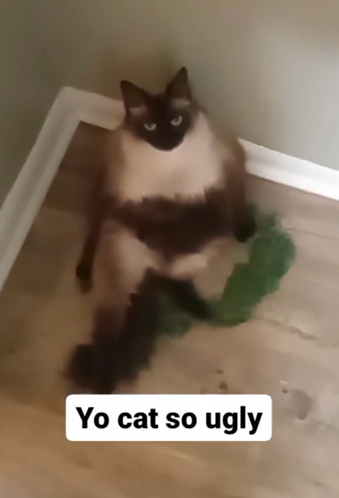

Time for Some Introductions!
Meet my beloved baby
Gaston

About Gaston
Gaston's Story
Gaston was born in December of 2019. Just a kitten that was 90% fluff, my mom immediately fell in love the moment she saw him at the animal shelter. She brought him home, and no surprise that my sisters and I also fell in love. Some names floated around-- my mom insisted on Charming for a while, but we hated it. My mom loved Disney villains, and we had a female cat that we had named Yzma, so, to stick with the theme, we came up with Gaston.

Gaston's Personality
Gaston’s all about affection, curiosity, and a little bit of swagger. He’s super cuddly when he wants to be and loves getting in on whatever’s happening around the house. Always curious, he’s constantly checking out new spots and keeping an eye on things. He walks around like we’re here to serve him!
Fun Facts About Gaston
- He was used as a baseball with the children of his owners before us. We think he still has some brain damage.
- He had a UTI earlier this year and it cost hundreds. So now he has to eat a very specific brand of wet food. And he can tell when it isn't that kind because he won't eat it.
- He actually really likes his stomach rubbed. He'll quite literally flop over on your feet to get pets.
- When I was living with my partner and their two cats, gaston's personality was completely different. He was less affectionate and more mean. But now that he's alone he is back to normal.
Photo Gallery
